Schneider Electric Go Green 2026 · Phase 2 · Supporting evidence
Rural Spark: results and evidence
The engineering evidence behind the Rural Spark deck: a solar mini-grid for a Chenchu hamlet in Amrabad, Nagarkurnool, Telangana. 18.36 kWp PV, 40.96 kWh LFP battery, 15 kW three-phase grid-forming inverter, 30 metered connections, about 40 kWh/day of demand.
Team: Parthasarathy P · Tanush Pavan VakalaggadaAmrita Vishwa VidyapeethamResults updated 24 Oct 2026
SIMULATED Every performance figure on this page comes from a computer model on satellite-derived weather. No hardware has run in the field yet. Loads are assumed appliance schedules until the planned 4-week metered baseline.
100%of essential load (lights, phones, health sub-centre, drinking-water pumping) served over a full typical year with our controller
9 → 0essential-load blackouts per year: typical reactive inverter vs our controller
0spoiled processing batches per year with ours, vs 2 (static thresholds) and 3 (reactive)
16 / 16Simulink battery-model cases pass against MATLAB and Python (max SoC error 1.3×10⁻¹⁰)
Animated outputs
Each animation replays a model output used in the deck. Static versions and the underlying data are in the sections below.
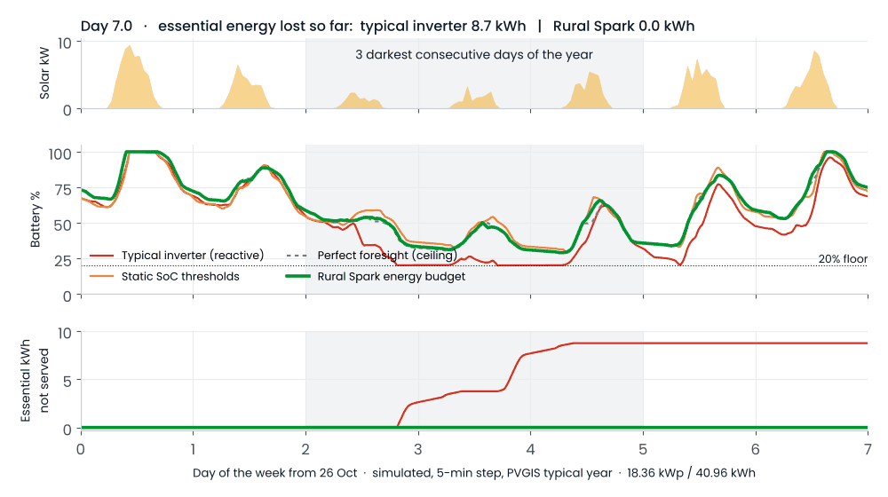
Worst week, 4 controllers. Typical inverter loses 8.7 kWh of essential supply; Rural Spark loses none. Data
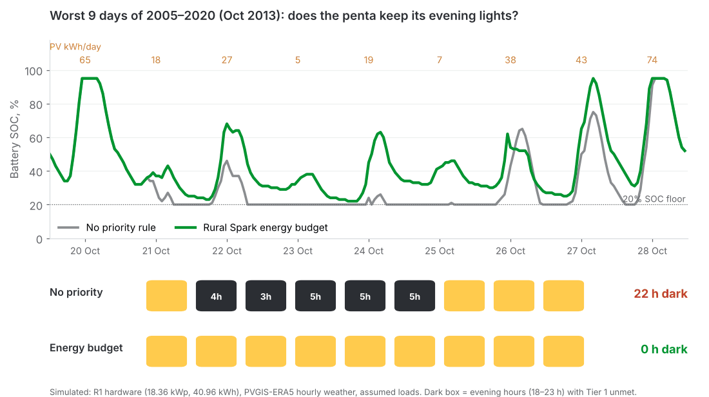
Worst 9 days in 16 years (Oct 2013). 22 evening hours dark with no priority rule; 0 with the energy budget.
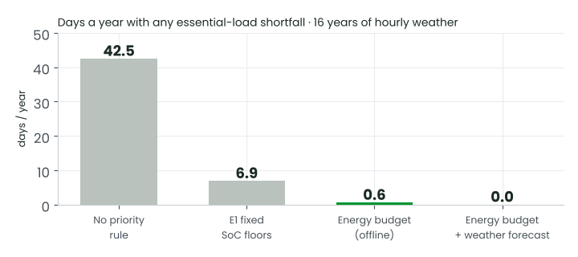
Essential-shortfall days a year, 16-year model. 42.5 → 6.9 → 0.6 → 0.0. Data
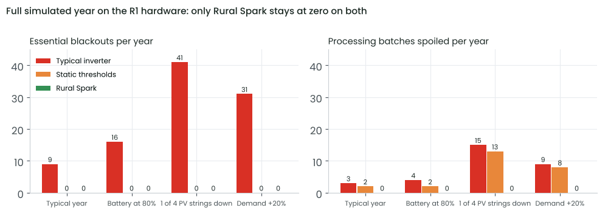
Full year and stress tests. Only Rural Spark stays at zero blackouts and zero spoiled batches. Data
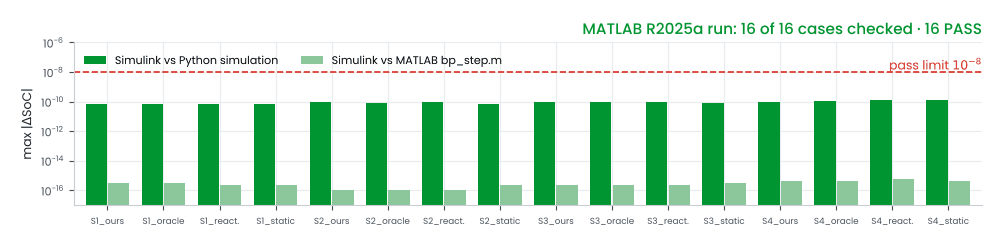
Simulink battery model, 16 cases run in MATLAB. All pass, worst SoC difference 1.3×10−10. Data
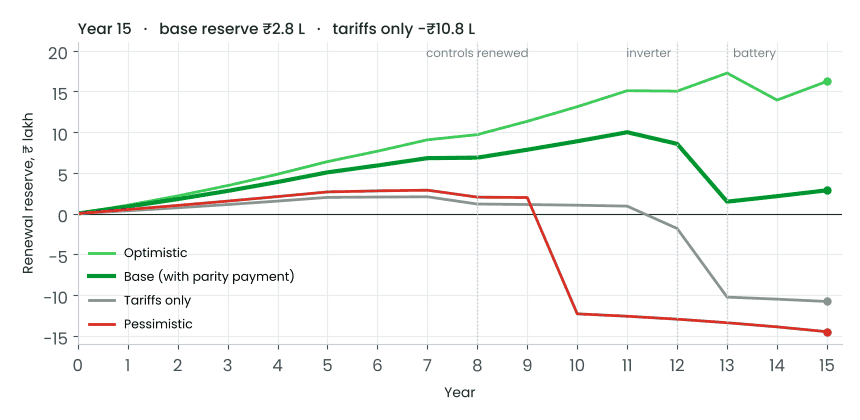
Renewal reserve, 15 years. Positive in the base case; fails in year 12 on tariffs alone. Data
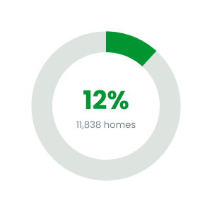
The energy gap. 11,838 of 1,00,000 off-grid PVTG homes electrified by 30 Jun 2026 (12%).
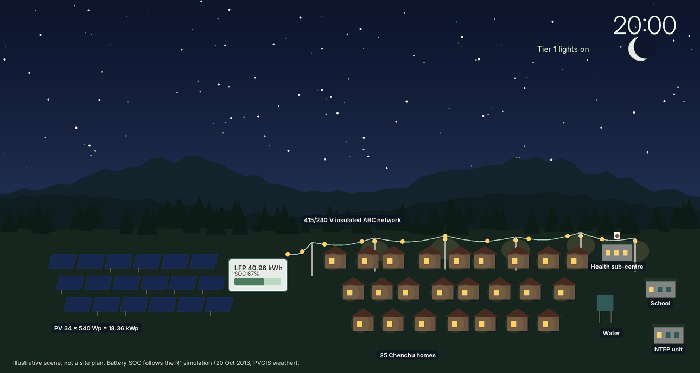
One evening in the pilot hamlet (illustration). Battery level follows the 16-year model on 20 Oct 2013.
1. What was tested
Two independent models were built and both point the same way.
Model A, 16-year hourly dispatch. PVGIS-ERA5 hourly weather for 2005–2020 at 16.37°N, 78.83°E (140,256 hours) on the R1 hardware. Compares no priority rule, the earlier E1 fixed SoC floors and our energy-budget controller.
Model B, 5/15-minute controller study (B1). PVGIS v5.2 typical meteorological year, a PV model checked to within 0.8% of PVGIS PVcalc (1,487 vs 1,476 kWh/kWp), stochastic appliance-level loads, an imperfect day-ahead forecast and a single AC bus with energy balance asserted each step. Four controllers run on identical inputs: reactive (typical inverter, first come first served), static SoC thresholds, our forecast-aware energy budget, and an oracle with perfect foresight as the upper bound. The battery pack is the MATLAB model in section 4.
2. The three darkest days of the year
Model B, R1 hardware, 7-day window from 26 October of the TMY with the three lowest-sun consecutive days in the middle. 5-minute step.
Animated replay. Top: solar output. Middle: battery state of charge. Bottom: cumulative essential (Tier 1) energy not served to lights, phones and the health sub-centre. The typical inverter hits the 20% floor twice; the three planned controllers never do. Data: worst_week_hourly.
S3 worst week, R1 hardware
Reactive
Static
Ours
Oracle
Tier 1 availability
82.3%
100%
100%
100%
Essential blackouts · longest
2 · 16 h
0
0
0
Tier 1 energy lost (kWh)
11.2 (8.7 lights/health + 2.5 water)
0
0
0
Tier 2 comfort served
88.7%
84.2%
81.3%
80.9%
Cold-store hours out of range
24.5
86.8
47.5
45.3
Curtailments announced in advance
–
–
85% · 10.5 h notice
–
Ours deliberately serves less comfort load than reactive so that essentials never go dark. This is the trade the community is asked to agree to in the tier workshops.
3. A full year and stress tests
Model B, R1 hardware, full TMY year at 15-minute steps. Each stress case changes one thing.
Case (R1 hardware, annual)
Metric
Reactive
Static
Ours
Oracle
Reference year
Tier 1 availability
99.13%
100%
100%
100%
Essential blackouts / yr
9 (longest 16 h)
0
0
0
Processing kWh delivered · batches spoiled
5,783 · 3
5,744 · 2
5,848 · 0
5,856 · 0
Cold-store hours out of range
50
272
99
101
Battery at 80% capacity
Tier 1 · spoiled
98.72% · 4
100% · 2
100% · 0
100% · 0
One PV string in four down
Tier 1 · spoiled
96.83% · 15
100% · 13
100% · 0
100% · 0
Demand +20%
Tier 1 · spoiled
97.67% · 9
100% · 8
100% · 0
100% · 0
Battery at 70% capacity
Tier 1 · spoiled
98.55% · 5
100% · 4
100% · 0
100% · 0
Ours captures 92% of the processing-energy gain that perfect foresight could add over static thresholds (5,848 vs 5,744 and 5,856 kWh). Its cost: more relay switching on the worst days (up to 16 changes a day vs 4 for static), which will be addressed with hysteresis tuning before firmware freeze.
Model A: 16 years of real hourly weather
Controller, R1 hardware
Days/yr with essential shortfall
No priority rule
42.5
E1 fixed SoC floors
6.9
Energy budget, offline forecast
0.6
Energy budget + weather forecast (±35% error)
0.0
Worst 9 days on record (20–28 Oct 2013): 22 evening hours dark with no rule, 12 h with E1 floors, 0 h with the energy budget. Model A and Model B use different weather (16 real years vs one typical year) and different load models, so their numbers are not directly comparable. Both rank the controllers the same way.
Sizing sweep
Model B at the original specification scale (24.5 kWh/day). Our controller holds Tier 1 at 100% across the whole grid of 8–14 kWp × 10–30 kWh; static thresholds need at least 20 kWh of battery to do the same.
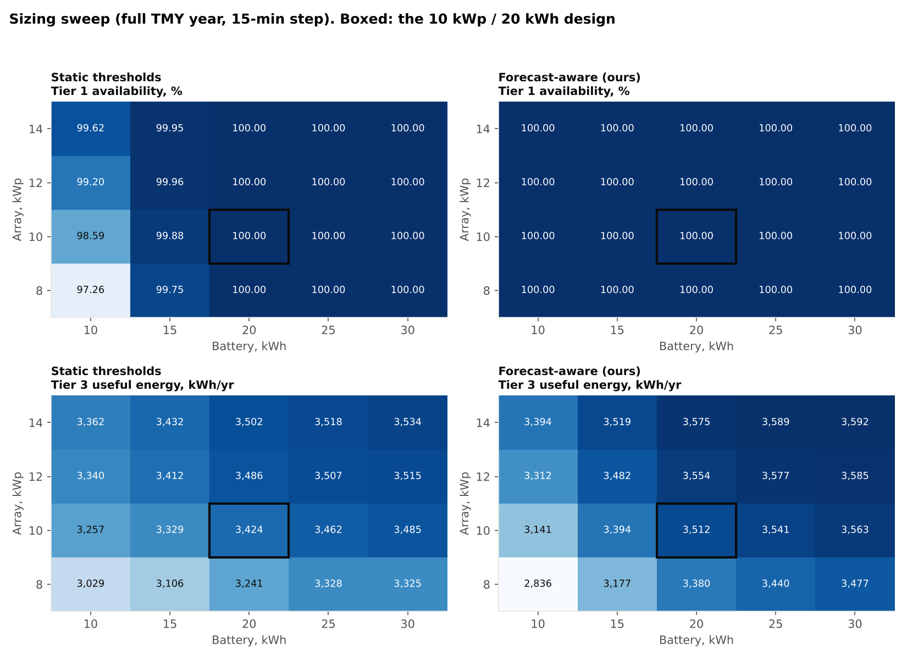
Sizing sweep at specification scale (10 kWp / 20 kWh reference, 24.5 kWh/day). The R1 design (18.36 kWp / 40.96 kWh / ~40 kWh/day) was chosen from Model A on 16 years of weather.
4. Battery pack model in MATLAB / Simulink
RuralSpark_BatteryPack.slx is a block-level Simulink model of the LFP pack. It is built from standard blocks, with no S-functions or MATLAB Function blocks, so every equation is visible on the canvas. Subsystems:
Power limits: 0.5C charge and discharge, and a charge derate above 45 °C cell temperature.
Power clamp: Saturation Dynamic that keeps requests inside the limits and the 20–100% SoC window.
Efficiency and losses: 97% one-way charge and discharge efficiency, with conversion losses fed to the thermal model.
SoC update: a discrete-time integrator limited to 0.2–1.0.
Thermal model: lumped cell temperature with an enclosure offset.
EFC counter and ageing: 1.5%/yr calendar fade and 0.005% per equivalent full cycle.
Electrical view: OCV lookup and pack voltage and current.
All parameters come from one struct bp (bp_default_params.m). The same struct drives the Simulink model, the MATLAB function model bp_step.m and the Python twin used inside the dispatch simulation.
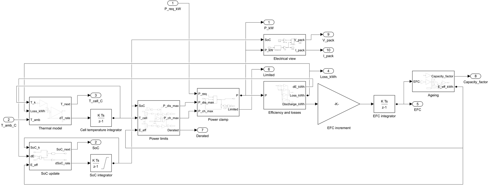
Inside the LFP Battery Pack subsystem, exported from MATLAB R2025a.
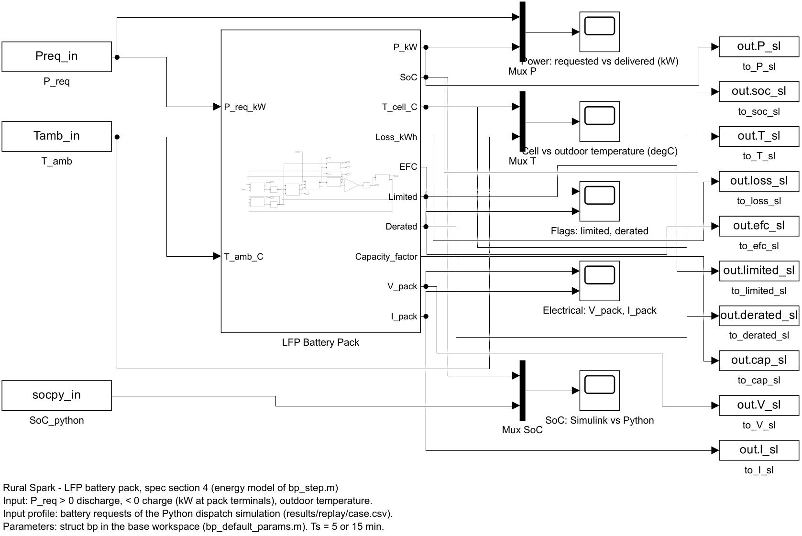
Test harness: replayed battery requests and outdoor temperature in; SoC, power, temperature, EFC and capacity out.
Verification RUN IN MATLAB R2025a
The model was run on 16 replay profiles: weeks S1–S3 at 5 minutes and full year S4 at 15 minutes, for each of the 4 controllers. Every case was compared with the same profile through bp_step.m and with the Python simulation.
Check (worst of 16 cases)
Max difference
SoC, Simulink vs bp_step.m
5.6×10⁻¹⁶
SoC, Simulink vs Python
1.3×10⁻¹⁰
Power, Simulink vs bp_step.m
5.5×10⁻¹⁴ kW
Cell temperature
1.4×10⁻¹⁴ °C
Result
16 / 16 PASS
The replay profiles come from the B1 specification case (10 kWp / 20 kWh). The parameter struct scales by energy, and the R1 runs above use the identical equations with Enom = 40.96 kWh.
What the pack model says about battery life
With our controller the R1 pack cycles about 118 equivalent full cycles a year. Linear fade then reaches 80% capacity in year 9.6 and about 73% in year 13. Section 3 shows that our controller still serves Tier 1 at 100% with the battery at 70% capacity. The financial model therefore plans the battery replacement in year 13, on measured state of health. The year-10 case is shown as a downside in the deck's sensitivity analysis.
5. Financial model
A 15-year cash-flow and asset-renewal model in Python. Every input is labelled by type (published price, estimate or proposal). No funding is sanctioned and no tariff is agreed; both are shown as assumptions.
₹29.76 Lcapital cost, base (range ₹23.1–40.0 L); ₹99,200 per connection
2.2×year-1 revenue ÷ operating cost with grant-funded capex (1.5× on tariffs alone)
+₹1.6 Loperator NPV at 8% with grant capex; −₹28 L if capex were privately financed
₹39/kWhlevelised cost incl. capex at 8% (World Bank 2019 mini-grid benchmark US$0.55–0.60)
The renewal reserve stays positive for 15 years in the base case, which includes a ₹45,000/yr State parity payment (proposal). With tariffs alone it turns negative in year 12. Data: capex, renewal_reserve, base_cashflow.
6. Data behind every chart
Each dataset is the exact output used for the charts in the deck and on this page. Download the CSV, or open one to preview and copy it.
simulation_b1/: Model B, the 5/15-minute controller simulation (Python), with the MATLAB battery pack model and Simulink file (matlab/RuralSpark_BatteryPack.slx; run matlab/RUN_ME.m).
dispatch_16yr/: Model A, the 16-year hourly dispatch model (JavaScript) on PVGIS-ERA5 weather, with its results.
finance/: the 15-year cash-flow and renewal-reserve model (Python) and its outputs.
Limits of these results
Loads are assumed schedules; a 4-week metered baseline replaces them before design freeze (Gate 2).
Energy models only: no motor starting, faults, harmonics or phase imbalance.
PVGIS is satellite reanalysis; on-site shading and soiling are not yet verified.
The ageing model is linear, with generic LFP coefficients. Cell-supplier data will replace them.
The inverter is a single point of failure in every model and is not simulated as failing; the mitigation is a spare control board and a 48-hour repair target.